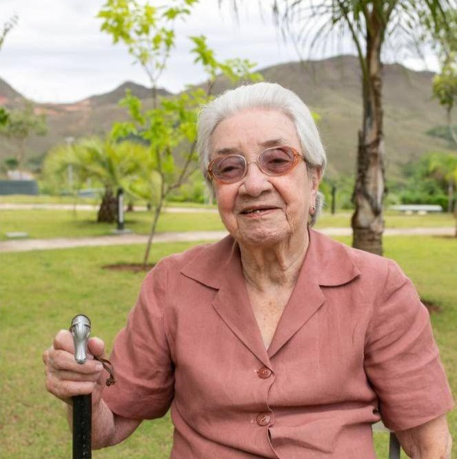

Esse site é um mural para celebrar a vida da Dona Dalva.
Dalva Pereira Garcia, nascida Dalva Pereira da Silva nasceu em 27 de outubro de 1924 na cidade de Patrocínio, no interior de Minas Gerais. Filha mais velha de Jacinto de Castro e Irondina Silva, casou-se com Vicente Garcia aos 20 anos e teve três filhos, Antônio, Heloísa e Roberto, cinco netos, Henrique, Antônio, Cristina, Guilherme e Angela, três netas de coração, Fanny, Luiza e Keninha, e onze bisnetos, Antônio, Felipe, Amanda, Isabela, Antônia, Alice, Julia, Lucas, Matheus, Valentino e David. Vovó Dalva foi uma mulher difícil (como ela mesma dizia), de personalidade forte, durona por fora, mas muito amorosa por dentro. Mulher trabalhadora, forte, honesta, um exemplo de pessoa, que por mais que a vida tenha lhe trazido momentos muito difíceis de qualquer ser humano superar, ela se manteve em pé, em seus sapatos de salto alto, e foi capaz de superar todos os obstáculos que lhe foram impostos.
Esse site foi desenvolvido por seu neto Felipe, com objetivo de celebrar a vida da nossa querida vó/bisa Dalva e tem também a intenção de preservar essas receitas deliciosas e esses ditados engraçadíssimos que foram publicaodos em um livro organizado pelas netas Angela e Cristina, com ajuda de todos os familiares, em comemoração ao aniversário de 90 anos da nossa querida vó. Como ela mesma dizia “alguém precisa aprender essas receitas senão, quando eu viajar para a cidade dos pés-juntos, ninguém vai saber cozinhar nessa família...”
Vó, te amamos! Saudades eternas!